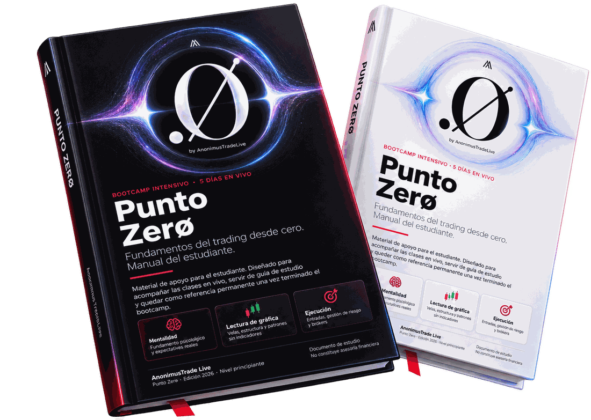

1
Mentalidad del trader
Por qué la mayoría pierde y qué hacer al respecto.
Ver detalle
Ocho mitos que cuestan dinero. Cómo funciona por dentro la industria del contenido de trading, y de dónde sale de verdad el ingreso de quien te enseña.
Bootcamp en vivo ·
Empieza el lunes 17 de agosto
Ya lo has probado todo. Viste videos, copiaste señales, seguiste a alguien en Telegram. Y aun así perdiste, o ganaste un rato y después lo devolviste todo.
Primera convocatoria
Lun 17 → Vie 21de agosto
Elige tu tanda
El acceso cierra en
Pago único, sin suscripción. La misma clase en las dos tandas: eliges una y es la tuya los cinco días.
¿Por qué mueves el stop loss cuando el precio va en tu contra?
¿Por qué cortas las ganancias pero dejas correr las pérdidas?
¿Por qué no tomas la ganancia donde dijiste que la ibas a tomar?
Casi nadie pierde por no saber qué es un soporte. Pierde por no respetar el plan que escribió quince minutos antes.
Las estadísticas divulgadas por los brókers de CFDs regulados indican que aproximadamente el 80 % de sus clientes pierden dinero.
Este número no mide lo difícil que es el mercado. Mide lo difícil que es operar con disciplina y consistencia cuando hay dinero en juego.
Eso no se arregla con otro indicador ni con más señales. Se arregla trabajando en ti, en tus decisiones y en tus impulsos, para que dejes de sabotearte solo.
Todos los cursos trabajan el mercado, pero pocos trabajan al trader.
Eso es Punto Zerø.
De qué se trata
Cinco clases en directo, de lunes a viernes, de dos horas cada una. Más un manual de 69 páginas que recibes el primer día.
Empezamos en cero absoluto: qué es una vela, quién está al otro lado del mercado. Terminas con dos cosas que casi nadie tiene al empezar: un método propio y un plan de trading claro.
No es un curso grabado. Son clases en directo, con Q&A (preguntas y respuestas) al final de cada una, para resolver tus dudas y no las de un alumno genérico. Nosotros cometimos todos los errores que tú vas a cometer, y entre los dos sumamos más de quince años operando: hicimos este programa para ahorrarte los cuatro o cinco años que perdimos dando vueltas.
El orden de los cinco días es el método.
El bróker va al final, cuando ya sabes lo suficiente para elegirlo tú. La mayoría de los cursos empieza por ahí, porque ahí está su comisión.
Por qué la mayoría pierde y qué hacer al respecto.
Ocho mitos que cuestan dinero. Cómo funciona por dentro la industria del contenido de trading, y de dónde sale de verdad el ingreso de quien te enseña.
Quién participa además de ti y por qué cambia lo que ves.
Contratos de futuros, micro y nano. Tipos de órdenes. Los tres costos que descuentan toda operación. Lotaje, apalancamiento y margen.
Velas, estructura y patrones. Sin un solo indicador.
Anatomía de la vela. Tendencia, rango, soporte y resistencia. Las figuras W y M, el hombro-cabeza-hombro y sus tres niveles de ejecución. Fractalidad. Proyección de objetivos y zonas de stops.
Tres simulacros completos con entrada, stop y objetivo.
Los cuatro elementos que debe tener toda operación. Gestión de riesgo y la unidad R. Cálculo del tamaño de posición. Y cuándo no operar, que en el primer año es lo que más dinero te ahorra.
Cómo elegir uno y verificar su licencia tú mismo.
Qué hace tu bróker con tu orden y por qué importa. Cómo comparar costos de verdad. La trampa de los bonos. Tu plan de trading.
Qué te llevas
En PDF, con 39 ilustraciones propias, glosario y anexos. Formato imprimible, con espacio para anotaciones.
Nuestra sala de trading, donde operamos en vivo. Eso no lo compartimos en redes sociales.

Es uno de los seis modelos de la estrategia que vamos a vender aparte a US$ 3,000. A los grupos siguientes ya no se les regala.
La prueba
Entre el 9 y el 14 de agosto cerramos la semana con 70,59 % de operaciones ganadoras. Lo mostramos en vivo en YouTube, y el video sigue ahí.
¿Prefieres vernos antes? Operamos gratis y en vivo, de lunes a viernes, de 8:30 a. m. a 12:00 p. m. (hora de Nueva York). Ahí no te vendemos nada.
Honestidad
Cinco días alcanzan para entender el terreno y salir con un método propio. No alcanzan para que ganes dinero todos los días desde la primera semana, y no te lo vamos a prometer. El que te prometa eso está jugando con tu tiempo y tu dinero.
Tampoco vas a encontrar testimonios: no hay todavía, porque nadie ha tomado este bootcamp. Lo único que podemos enseñarte es lo que ya está publicado, y está más arriba, en el video.
El desglose
Te lo llevas todo por
Pago único
Te ahorras US$ 2,320
Antes de decidir, llévate el extracto gratis: son 7 páginas del manual real, para que veas cómo enseñamos sin pagar nada.
Te llevas Breakout, uno de los seis modelos de entrada de nuestra estrategia de scalping. La estrategia completa la vamos a vender aparte.
Las plazas de esta edición son ilimitadas. A los grupos siguientes ya no se les regala.
Reservar mi plazaNadie va a hacer esto por ti. Pero tampoco tienes que hacerlo a ciegas, ni aprender perdiendo tu propio dinero durante dos años.
¿Dudas antes de decidir? Escríbenos a puntozero@anonimustradelive.com. Preguntar no cuesta nada.
Sí. Empezamos en cero: qué es una vela, cómo se lee una gráfica, quién está al otro lado. No damos nada por sabido.
Ese es el perfil que más aprovecha el día 1 y el día 4. Si ya operas y pierdes sin saber bien por qué, casi siempre el hueco está en los fundamentos y en la gestión de riesgo, no en la estrategia.
En Whop, la misma plataforma donde reservas tu plaza. Al entrar tienes ahí el acceso a las clases y el chat de tu grupo. No necesitas instalar nada más.
No. Eliges una al reservar y esa es la tuya los cinco días. Cada tanda se prepara para quienes se anotaron en ella, así que si la gente se mueve sobre la marcha terminamos dando una clase a una sala vacía y repitiéndola después. Elige la que de verdad puedas cumplir.
Esa clase la pierdes, porque no hay grabaciones. El manual cubre el contenido, pero el Q&A no se repone. Si ya sabes que vas a faltar dos días o más, mejor espera a la siguiente edición.
Ninguna de las dos cosas. Durante la semana no necesitas poner ni un peso en el mercado, y te vamos a recomendar que todavía no lo hagas. El bróker lo vemos el día 5, cuando ya sepas elegirlo tú.
Para que el Q&A sea honesto. La gente no pregunta por sus pérdidas reales delante de una cámara que va a quedar guardada. El manual de 69 páginas cumple esa función.
Porque es la primera edición y nadie lo ha tomado todavía. Preferimos decirlo a inventarlos.
No. Por eso ponemos en esta página todo lo que el bootcamp no hace, y por eso el extracto de 7 páginas es gratis: para que decidas sabiendo.
Al terminar la semana el acceso se desactiva solo. Si tu caso fue de fuerza mayor, escríbenos a puntozero@anonimustradelive.com explicando qué pasó y adjuntando alguna prueba. Lo miramos caso por caso.